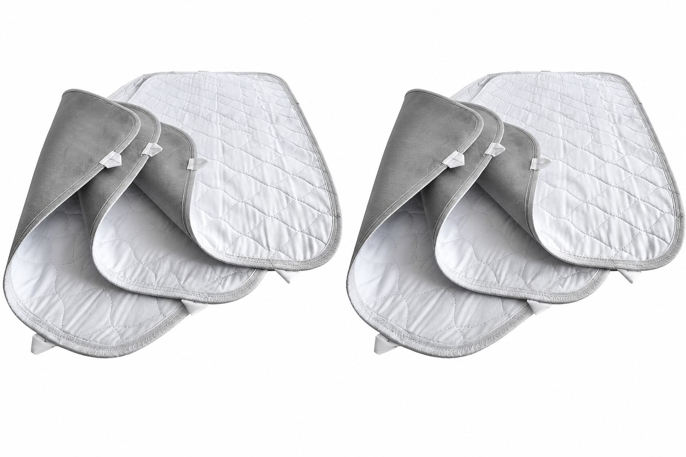

サイズ表
標準サイズ
インチとセンチを切り替えられます。34 × 36 in は Amazon US で最も売れている洗えるシーツのサイズです。
| タイプ | 広げたサイズ | 主な用途 | 入数 |
|---|---|---|---|
| 座面 / 乳児 | 18 × 24 in | おむつ替えマット、ハイチェア、チャイルドシート、車いす、ペットのクレート（4層構造） | 3 |
| 車いす / ソファ | 24 × 36 in | リクライニングチェア、ソファの座面、車いす、ベビーベッド | 2 / 4 |
| 介護ベッド / シングル | 34 × 36 in | 最も人気の小売サイズ。ベッド（腰の下） | 2 / 4 |
| ベッド・ロング | 34 × 52 in | 肩からひざまでを覆う | 1 / 2 |
| ベッド・エクストラロング | 34 × 60 in | 寝返りの多い方、マットレスの幅いっぱい（シングル） | 2 |
| ベッド・ワイド | 36 × 60 in | ダブル / クイーンベッド、2人用、大型犬 | 2 |
| ベッド・フルレングス | 34 × 76 in | シングル / 介護ベッドのマットレスを頭から足元まで。寝たきりの介護 | 1 |
| ウイング付き・標準 | 34 × 36 in + ウイング2枚 18 × 34 in | ウイングをマットレスの下に差し込むので、シーツがずれない | 2 |
| ウイング付き・ロング | 34 × 52 in + ウイング2枚 18 × 34 in | より長く覆えてウイング付き。認知症や寝返りの多い方に | 2 |
| EU サイズ | 29.5 × 35.4 in | ドイツ / EU の介護用品標準サイズ | 1 / 2 |
| 日本向けハーフ | 35.4 × 23.6 in | 日本の介護用防水シーツのハーフサイズ | 1 / 2 |
| 大判 | 34 × 76 in より大きいサイズ | ダブル / クイーンベッド、ソファ、施設。受注生産 | カスタム |
もっと大きいサイズが必要ですか？ 34 × 76 in（86 × 193 cm）を超えるサイズは受注生産します。寸法許容差 ±2 cm。5回洗濯後の寸法変化率 3%以下（目標）。
サイズの選び方
マットレスに合わせて選ぶ
| ベッド / 座席 | おすすめのシーツ |
|---|---|
| 介護ベッド（幅約90 cm） | 34 × 36 in、上半身全体を覆うなら 34 × 52 in |
| シングル | 34 × 52 in または 34 × 60 in |
| シングル / 介護ベッド、頭から足元まで | 34 × 76 in (86 × 193 cm) |
| ダブル / クイーン | 36 × 60 in を横向きに、または大判を受注生産 |
| 寝返りの多い方 / 認知症ケア | 34 × 36 または 34 × 52 in に 46 × 86 cm ウイング付き |
| ベビーベッド / 幼児用ベッド | 24 × 36 in または 18 × 24 in |
| 車いす / リクライニングチェア | 18 × 24 in または 24 × 36 in |
| EU の介護ベッド（90 cm） | 75 × 90 cm または 90 × 150 cm |
| 日本の布団 / 介護ベッド | ハーフ 90 × 60 cm、またはフル 90 × 170 cm |

オプション
カラーと包装
在庫カラー
白
ライトブルー
ミント
グレー
ネイビー
ツートン仕様（白い表面と色付きの裏面）なら、どちらが上かひと目でわかります。濃い色はシミが目立たず、ペットや大人の介護向けのバイヤーに好まれます。
標準包装
- たたんで PE / 再生 PE の袋に台紙付きで、またはカラーボックスで
- 1 / 2 / 3 / 4 / 6枚入り
- 輸出用5層段ボール、サイズにより20–40枚
- Amazon FNSKU ラベルと窒息注意表示はご要望に応じて
- 目安の重量：34×36 in、スタンダードグレードで約330–380 g


洗える防水シーツのラインを立ち上げませんか？
販売市場、サイズ、数量をお知らせください。1営業日以内に仕様書と数量別価格をお送りします。